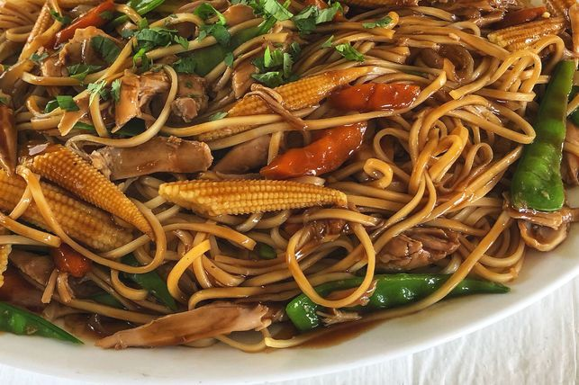

Slow cooker chicken chow mein
Ingredients
- 250ml (1 cup) Massel Chicken Style Liquid Stock
- 2 tbsp soy sauce
- 2 tbsp oyster sauce
- 2 tsp sesame oil
- 2 tsp finely grated ginger
- 1 brown onion, cut into thin wedges
- 1 large carrot, peeled, halved lengthways, sliced
- 2 chicken marylands, skin removed
- 3 tsp cornflour
- 250g dried egg noodles
- 100g snow peas, halved diagonally
- 410g can baby corn spears, drained, halved
- Chopped fresh coriander leaves, to serve
5 Method Steps
Step 1
Combine stock , soy sauce , oyster sauce , sesame oil and ginger in a slow cooker. Add the onion , carrot and chicken . Cover and cook for 5 hours on LOW, turning chicken halfway through cooking, if possible.
Step 2
Remove the chicken from the slow cooker and place on a chopping board. Turn the slow cooker to HIGH. Combine cornflour with 1 tablespoon water, stirring until smooth. Stir into the liquid in slow cooker. Cover and cook for 15 minutes.
Step 3
Meanwhile, cook noodles in a large saucepan of boiling water for 3 minutes, adding the snow peas for the last 1 minute of cooking time. Drain and run under cold water. Set aside. Use a fork to shred chicken from the bone.
Step 4
Add the chicken, noodles, snow peas and corn to the slow cooker. Use tongs to toss to combine.
Step 5
Sprinkle the chow mein with coriander to serve.